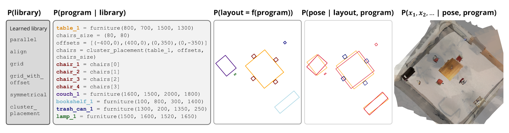
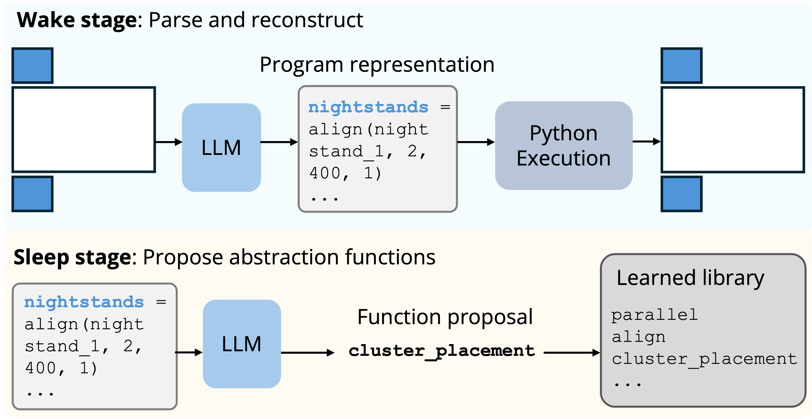
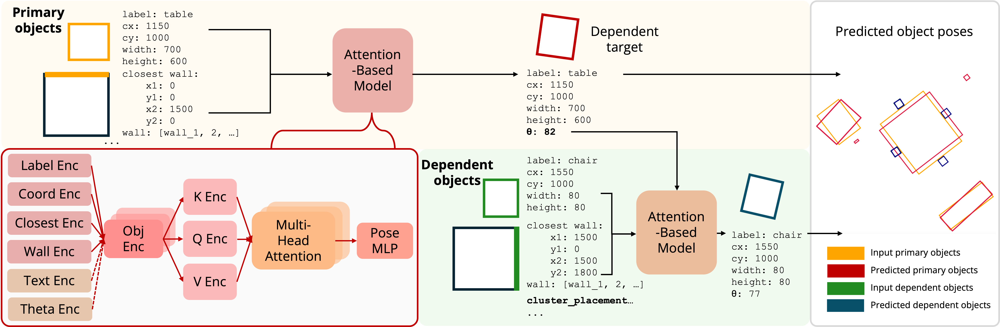
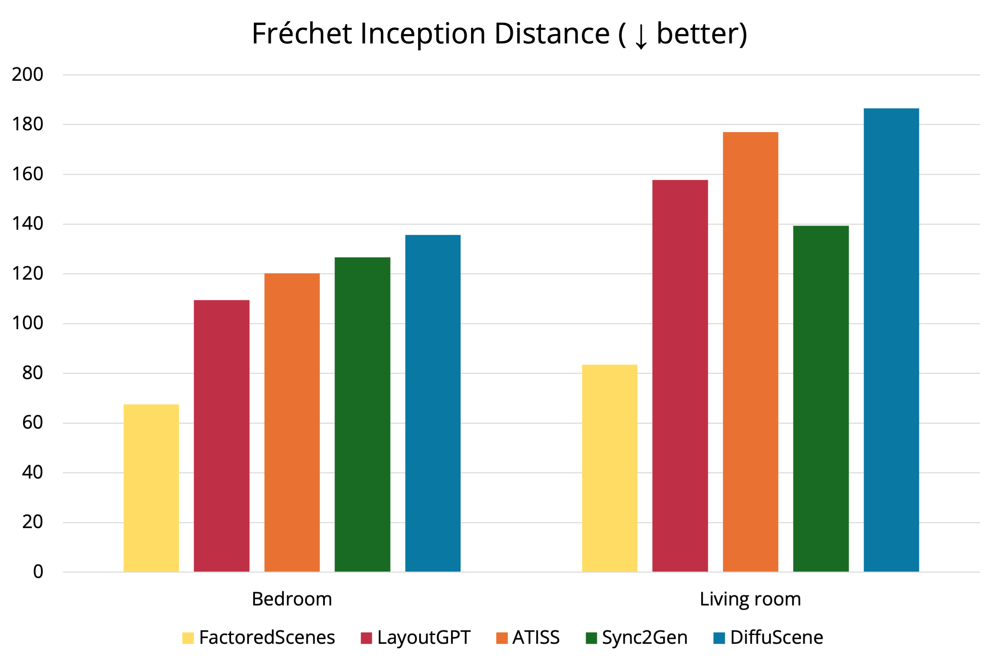
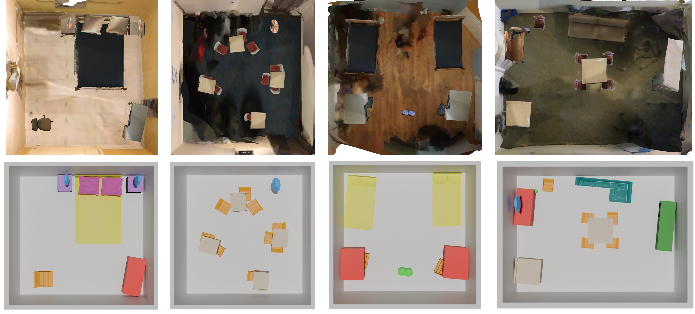

From Programs to Poses: Factored Real-World Scene Generation via Learned Program Libraries
NeurIPS 2025

Abstract
Real-world scenes, such as those in ScanNet, are difficult to capture, with highly limited data available. Generating realistic scenes with varied object poses remains an open and challenging task. In this work, we propose FactoredScenes, a framework that synthesizes realistic 3D scenes by leveraging the underlying structure of rooms while learning the variation of object poses from lived-in scenes. We introduce a factored representation that decomposes scenes into hierarchically organized concepts of room programs and object poses. To encode structure, FactoredScenes learns a library of functions capturing reusable layout patterns from which scenes are drawn, then uses large language models to generate high-level programs, regularized by the learned library. To represent scene variations, FactoredScenes learns a program-conditioned model to hierarchically predict object poses, and retrieves and places 3D objects in a scene. We show that FactoredScenes generates realistic, real-world rooms that are difficult to distinguish from real ScanNet scenes.
FactoredScenes
How can we learn to generate realistic scenes from limited data? Our key insight is that, despite inherent noisiness, indoor scenes retain significant underlying structure based on how rooms were intentionally designed, following social norms and preferences. Chairs are grouped around tables, and coffee tables are positioned by couches. We propose to leverage this (hidden) structure by first generating programmatic layouts that align with the foundational design of rooms, then modeling the realistic variation of lived-in scenes through a pose prediction model for orienting objects in the room. Our goal is to synthesize ScanNet-like data with diverse room layouts and object poses.
To this end, we introduce FactoredScenes, a framework that uses a factored representation to represent a scene. We decompose complex scene generation into five steps:
(i) learn a library of programs that capture room structures,
(ii) generate a scene program using LLMs and the learned library,
(iii) execute the program to retrieve axis-aligned layouts,
(iv) predict object poses with a program-conditioned model, and
(v) retrieve object instances based on program structure and predicted dimensions.
Notably, such decomposition of a room into hierarchical concepts eliminates the need to directly generate a room sampled from the full scene distribution, learned solely from ScanNet data. Instead, this approach enables FactoredScenes to leverage different data sources and methods to model different components of scenes' structure—effectively bootstrapping learning of the full scene distribution despite limited real-world data. Importantly, this modular design is made possible due to the appropriate levels of abstraction that enable interface between each component. Semantic knowledge from LLMs is distilled into programs, regularized by learned libraries, which operate on text-parameterized objects, with numeric values predicted by neural networks.
From programs...
Our framework first learns a space of programs that can generate room layouts from 3D-Front, a large-scale dataset of synthetic indoor scenes that are professionally designed. We use this dataset to learn a library of reusable programs that captures room structure patterns. FactoredScenes then leverages the generalization capabilities of large language models to create diverse new layouts, guided by our learned library. We demonstrate that this library learning step is essential in capturing structural relationships between objects in rooms, as opposed to relying solely on an inference-based library that has never seen example scenes.

... to poses
Given the program and generated layout, FactoredScenes learns to predict object poses, using a much smaller ScanNet dataset. Here, the layout program serves as a form of regularization, enabling effective learning from (very) limited real-world data. FactoredScenes's object pose model orients bounding boxes hierarchically given this program. It first predicts poses of primary objects (e.g., a table), and then predicts that of dependent objects (e.g., chairs grouped around the table) based on primary pose predictions. Finally, FactoredScenes retrieves object instances based on their predicted dimensions, completing the full 3D scene.

Results
FactoredScenes demonstrates significant improvements over prior work in generating realistic ScanNet oriented layouts by FID and KID metrics. We also quantitatively evaluate our learned library's ability to compress room structure compared to an inference-only library, and see a 644.1% relative improvement in function use. In addition, we evaluate our object pose model's performance, which shows a 11.4% relative improvement in prediction of dependent object poses. Finally, we conduct a human study comparing FactoredScenes's rooms to real ScanNet rooms, and demonstrate that our generated 3D scenes are difficult for humans to distinguish from real scenes. We believe that FactoredScenes is a step toward realistic, real-world scene generation from programs to poses.

Below, we render diverse examples of FactoredScenes's generated 3D scenes with annotated ScanNet (top row) and ShapeNet (bottom row) objects. Note that ScanNet objects are often partial, hence we include a scaled and interpolated ScanNet background for visualization.

Code release
We release code for FactoredScenes here. Thanks!